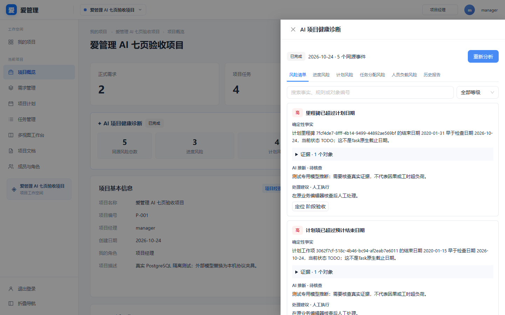
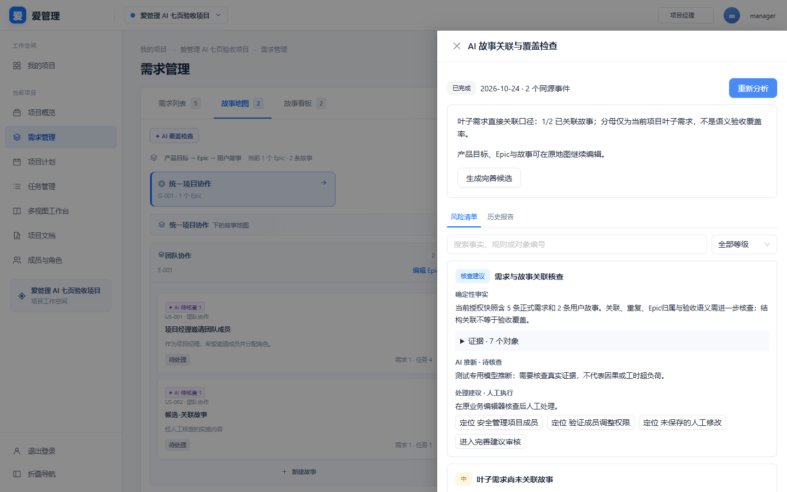
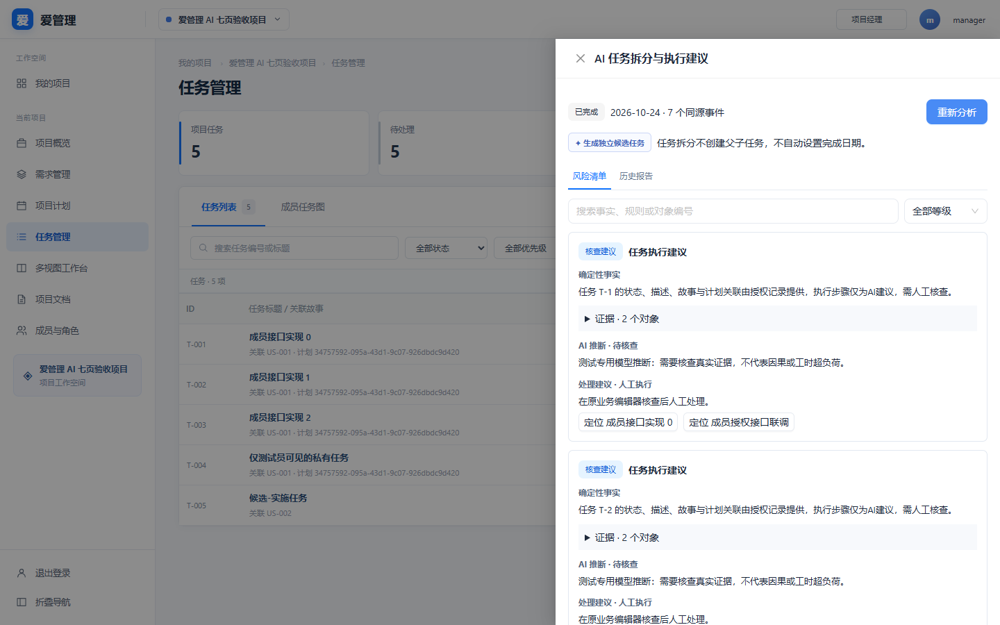
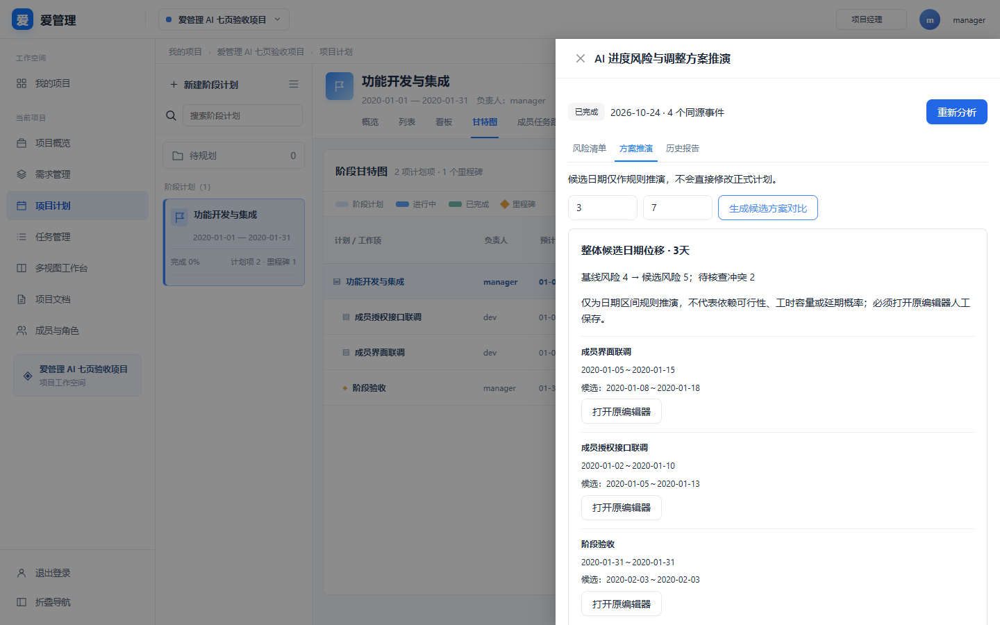
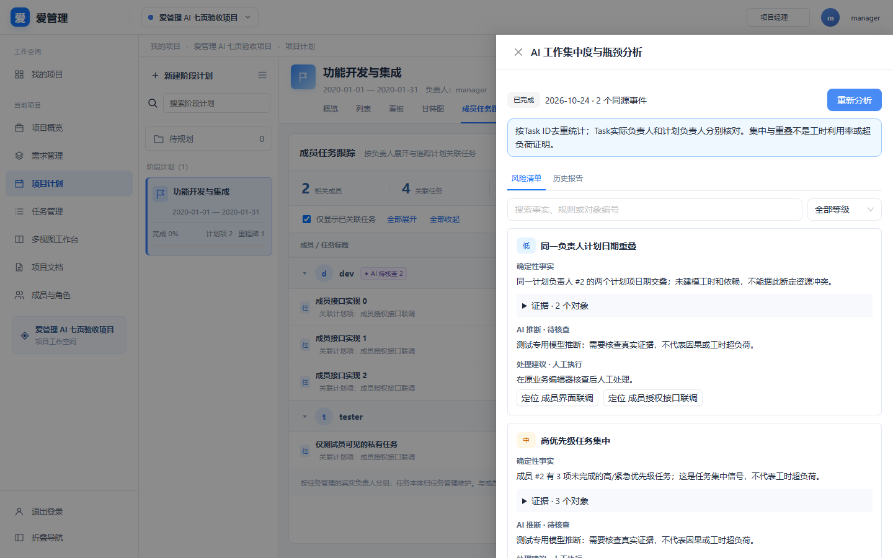
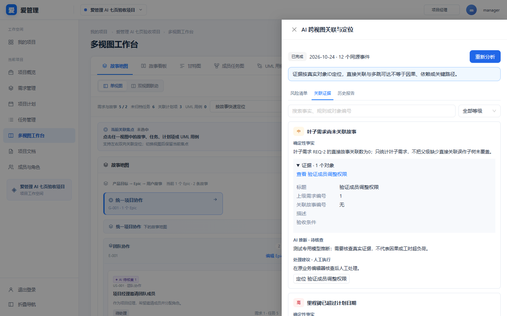
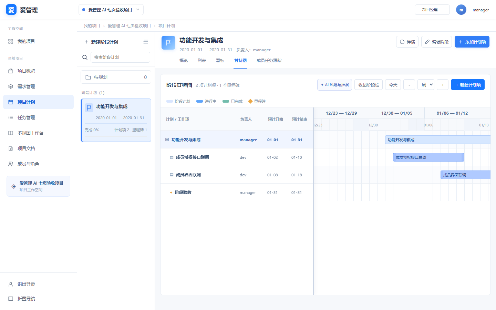
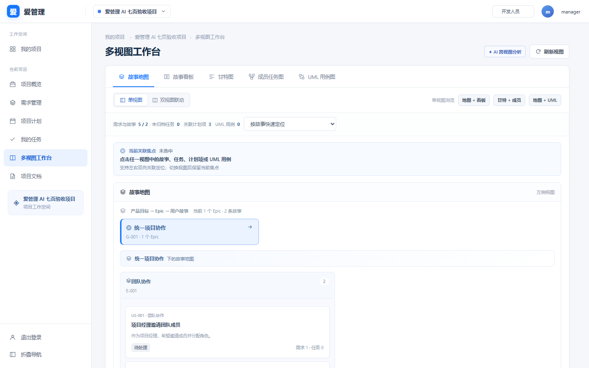
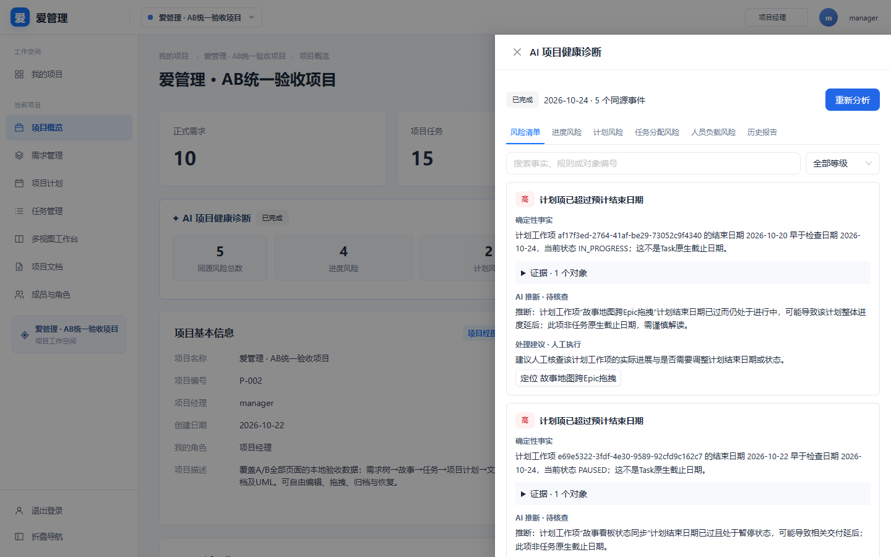

项目概览



全部运行截图为1440×900。七页与两项新增验收截图使用实际React/NestJS/Docker PostgreSQL隔离数据库；模型为显式本地协议夹具，自动化零付费。下方另附真实DeepSeek报告，区分联调与夹具证据。
完整修复及验收报告 · 原业务与V2.0原型对照 · 11组浏览器结果














原业务数据库，手动真实调用1次、5条事实和验证后的解释；本截图只读取保存报告，不产生新调用。
